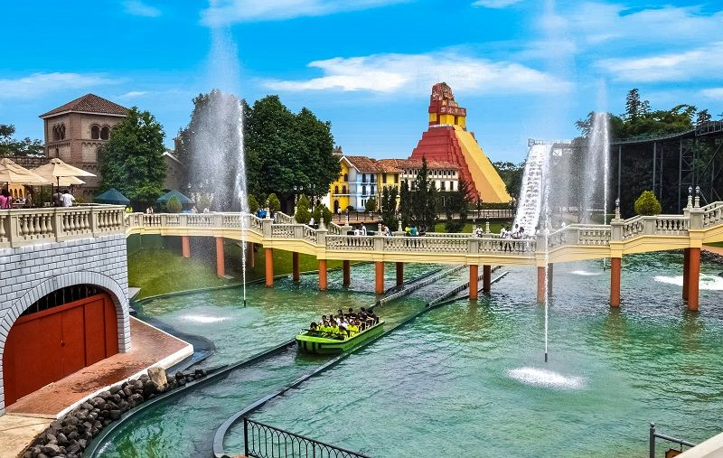

Descripción
Retalhuleu es una departamento conocido como la capital del mundo, debido a la riqueza de sus recursos naturales y culturales.
El centro histórico de Retalhuleu cuenta con una variedad de edificios coloniales y plazas que reflejan su rica historia. Los visitantes pueden explorar la arquitectura y aprender sobre la influencia de la cultura maya en la región.
Retalhuleu es un destino popular para los amantes de la historia y la arqueología, y ofrece una visión fascinante de la civilización maya en su apogeo.
Ubicación
Retalhuleu se encuentra a 190 kilómetros de la Ciudad de Guatemala.
Actividades Recomendadas
- Exploración de las ruinas arqueológicas
- Fotografía de paisajes y arquitectura maya
- Visitas a los parques del IRTRA
- Parque de diversiones Xetulul
- Parque ecológico Xocomil